SQL 标准化
为了提升用户体验，降低用户学习成本和脚本迁移复杂度，自 1.30.17 / 2.00.5 版本开始，DolphinDB 逐步支持了标准化 SQL 的书写方法；并于 1.30.22 / 2.00.10 版本起，对标准 SQL 的常用语法和关键字实现了兼容。
1. 与标准 SQL 的兼容性
在脚本层面，自 1.30.22 / 2.00.10 版本起，DolphinDB SQL 开始支持：
- 关键字全大写或全小写的书写方式
- 脚本的换行不影响语法解析，但存在两种特殊情况：
- 组合关键字不允许拆分，如 order by, group by, context by, pivot by, union all, inner join, nulls first 等。
- 不使用 as 指定字段别名时，别名与原字段之间不能换行。
注意：SQL 语句中的数据库或数据表名称是大小写敏感的。
本章三个小节分别以列表形式说明 DolphinDB 对标准 SQL 语法的支持：
包含：
- 对 SQL-92 常用关键字的支持性
- 对 SQL 类型及类型转换函数的支持性
- 非 SQL-92 标准的常用关键字支持表
1.1. 常用的 ANSI SQL-92 关键字支持表
下表共统计了 92 项常用的 ANSI SQL-92 关键字，支持 62 项。其中，在不支持的 30 项中：5 项部分兼容，7 项与约束相关（在分析项目中没有太大的使用价值），10 项有替代方案。
√：表示兼容 ×：不兼容 ○：部分兼容
“说明”字段会给出对应函数或可替代的方案
| keyword（按 A-Z 排列） | 兼容性 | 说明 |
|---|---|---|
| CHECK | × | 不支持约束 |
| CONSTRAINT | × | 不支持约束 |
| CONTAINS | × | 用 LIKE 替代 |
| DEFAULT | × | 不支持默认值 |
| ESCAPE | × | 暂不支持 ESCAPE 定义转义符 |
| EXCEPT | × | 暂不支持 EXCEPT，用 WHERE 替代过滤 |
| EXEC | × | 存在同名关键字，但是作用不同 |
| EXTRACT | × | 通过内置日期函数截取日期/时间的某个部分 |
| FOREIGN | × | 不支持外键 |
| GLOBAL | × | 不支持定义 GLOBAL TEMPORARY TABLE |
| IDENTITY | × | 需要自定义标识列，或者用 rowNo 替代 |
| INTERSECT | × | 暂不支持取交集，用 WHERE 过滤 |
| LAST | × | <fetch orientation> 的关键字之一，表示取最后几行记录。目前 DolphinDB 仅支持在 CONTEXT BY LIMIT 中指定取最后几行记录。注：内部存在同名关键字 LAST 用于排序时指定空值位置，用法 NULLS LAST。 |
| NATURAL | × | 不支持 NATURAL JOIN，用 INNER JOIN 替代 |
| OUTER | × | 直接用 LEFT JOIN, RIGHT JOIN, FULL JOIN 替代 |
| OVERLAPS | × | 用 EXITS 替代 |
| POSITION | × | 用 strpos 替代 |
| PRIMARY | × | 不支持主键 |
| REFERENCES | × | 不支持外键 |
| RESTRICT | × | 不支持约束删除 |
| SOME | × | 用 ANY 替代 |
| SPACE | × | |
| TRANSLATE | × | 用 strReplace 或 regexReplace 替代 |
| UNIQUE | × | 不支持唯一约束 |
| VIEW | × | 不支持视图 |
| ADD | √ | ALTER..ADD.. |
| ALL | √ | |
| ALTER | √ | |
| AND | √ | |
| ANY | √ | |
| AS | √ | |
| ASC | √ | |
| BETWEEN | √ | |
| BY | √ | |
| CASE | √ | |
| CAST / CONVERT | √ | 对应 cast 函数 |
| COALESCE | √ | |
| COLUMN | √ | |
| COUNT | √ | |
| CREATE | √ | |
| CROSS | √ | CROSS JOIN |
| DELETE | √ | |
| DESC | √ | |
| DISTINCT | √ | |
| DROP | √ | |
| ELSE | √ | CASE WHEN..THEN..ELSE END |
| END | √ | CASE WHEN..THEN..ELSE END |
| EXISTS | √ | |
| FALSE | √ | false |
| FROM | √ | |
| FULL | √ | FULL JOIN |
| GROUP | √ | |
| HAVING | √ | |
| IF | √ | IF |
| IN | √ | |
| INNER | √ | INNER JOIN |
| INSERT | √ | |
| IS | √ | IS NULL |
| JOIN | √ | |
| LEFT | √ | LEFT JOIN, 字符串函数 left |
| LIKE | √ | |
| LOWER | √ | 对应 lower 函数 |
| MAX / MIN | √ | 对应 max，min 函数 |
| NOT | √ | |
| NULL | √ | |
| NULLIF | √ | 对应 nullIf 函数 |
| ON | √ | JOIN .. ON |
| OR | √ | |
| ORDER | √ | |
| REPEAT | √ | 对应 repeat 函数 |
| RIGHT | √ | 字符串 right 函数 |
| SELECT | √ | |
| SET | √ | |
| SUBSTRING | √ | 对应 substr 函数 |
| SUM | √ | 对应 sum 函数 |
| TABLE | √ | |
| TEMPORARY | √ | |
| THEN | √ | |
| TRIM | √ | 对应 trim 函数 |
| TRUE | √ | true |
| UNION | √ | |
| UPDATE | √ | |
| UPPER | √ | 对应函数 upper |
| VALUES | √ | INSERT INTO .. VALUES .. |
| WHEN | √ | |
| WHERE | √ | |
| WITH | √ | |
| CHARACTER_LENGTH | ○ | 对应 strlen 函数 |
| FETCH | ○ | 用 TOP / LIMIT 子句替代 |
| FIRST | ○ | <fetch orientation> 的关键字之一，可以用 TOP/LIMIT 替代注：内部存在同名关键字 FIRST 用于排序时指定空值位置，用法 NULLS FIRST。 |
| TRANSACTION | ○ | 对应 TRANSACTION 关键字 |
| WHILE | ○ | 用内部 FOR 或 DO-WHILE 代替 |
注意：DolphinDB 内部的权限管理机制是一套独立的机制，和 SQL 不直接挂钩，因此此处关键字不包含权限相关的关键字，如：GRANT, DENY 等。
1.2. SQL 类型及相关类型转换函数的支持表
| keyword（按 A-Z 排列） | 兼容性 | 说明 |
|---|---|---|
| CHAR / CHARACTER 类型 | ○ | 对应 STRING, SYMBOL 类型 |
| DATE 类型 | ○ | 对应 DATE 类型，或 date 函数 |
| DATETIME 类型 | ○ | 对应 DATETIME 类型 |
| DAY 函数 | ○ | 对应函数 dayOfMonth |
| DECIMAL / DEC / NUMERIC 类型 | ○ | 对应 DECIMAL32, DECIMAL64, DECIMAL128 |
| DOUBLE 类型 | ○ | 对应 DOUBLE 类型 |
| FLOAT / REAL 类型 | ○ | 对应 FLOAT 类型 |
| HOUR 函数 | ○ | 对应 hour 函数 |
| INT / INTEGER 类型 | ○ | 对应 INT, SHORT, LONG |
| INTERVAL 关键字 | × | 用 temporalAdd 的 DURATION 替代 |
| MINUTE 函数 | ○ | 对应 minuteOfHour 函数 |
| MONTH 函数 | ○ | 对应 monthOfYear 函数 |
| SECOND 函数 | ○ | 对应 secondOfMinute 函数 |
| TIME 类型 | ○ | 对应 SECOND 类型 |
| TIMESTAMP 类型 | ○ | 对应 DATETIME 类型 |
| VARCHAR 类型 | ○ | 对应 STRING, SYMBOL 类型 |
| YEAR 类型 | × | 不支持年类型 |
| YEAR 函数 | ○ | 对应 year 函数 |
1.3. 非 SQL-92 标准的常用关键字支持表
DolphinDB 针对分布式计算提供了很多特有的关键字，也根据应用场景提供了一些特色的 join 方法。
| keyword（按 A-Z 排列） | 说明 |
|---|---|
| asof join | 按时间列就近连接 |
| context by | 类似 OVER 开窗函数，用于分组计算 |
| cgroup by | 累计分组计算 |
| exec | 生成一个标量、向量或矩阵 |
| map | 分区内单独计算 |
| partition | 选择分区 |
| pivot by / unpivot | 类似 Oracle 的 PIVOT，用于宽表和窄表的转换 |
| sample | 随机选取分区 |
| top / limit | 取前 n 条记录；其中 limit 和 context by 搭配使用可以取分组的前 n 条或后 n 条记录 |
| truncate | 删除数据 |
| window join | 窗口连接 |
DolphinDB 还提供了一些辅助 SQL 查询的 HINT 关键字：
| keyword | 说明 |
|---|---|
| [HINT_LOCAL] | 添加该关键字后，仅获取在本地所有节点数据的查询结果。 |
| [HINT_HASH] | group by 分组默认优先采用哈希算法。 |
| [HINT_KEEPORDER] | 添加该关键字后，context by 分组后计算的输出结果顺序将和输入保持一致。 |
| [HINT_SEQ] | 添加该关键字后，SQL 语句将在分区间串行执行。 |
| [HINT_NOMERGE] | 添加该关键字后，map 的查询结果不再汇总成一张内存表返回给客户端，而是直接返回分区表的句柄。 |
| [HINT_PRELOAD] | 仅 TSDB 引擎支持该关键字，添加后，where 语句进行条件过滤前，会先将所有数据列加载到内存后再进行过滤。 |
| [HINT_EXPLAIN] | 添加该关键字后，系统将打印 SQL 语句的执行过程，便于 SQL 查询中实时监测查询的速度和执行的顺序。 |
| [HINT_SORT] | 添加该关键字后，group by 分组时将采用排序算法进行。 |
| [HINT_VECTORIZED] | 添加该关键字后，group by 分组时将采用向量化运算（vectorization）。 |
更多有关 HINT 关键字的内容，参考：HINT。
2. 数据准备
本章将简单介绍如何在 DolphinDB 中以标准 SQL 的方式编写脚本。为了便于用户实践理解，本章的所有案例均采用统一的数据库和数据表，建库建表语句请参见 建库建表章节。
2.1. 数据集说明
本文的示例采用了 HR（人力资源数据集）做为案例数据集（见节尾）进行演示，包含以下几个表：
| 数据集 | 存储形式 |
|---|---|
| countries | 维度表 |
| departments | 维度表 |
| employees | 维度表 |
| jobs | 维度表 |
| job_history | 分布式表：HASH(EMPLOYEE_ID) |
| locations | 维度表 |
| regions | 维度表 |
每个表的字段及类型如下：
countries
Column Name Type COUNTRY_ID SYMBOL COUNTRY_NAME STRING REGION_ID INT departments
Column Name Type DEPARTMENT_ID INT DEPARTMENT_NAME STRING MANAGER_ID INT LOCATION_ID INT employees
Column Name Type EMPLOYEE_ID INT FIRST_NAME STRING LAST_NAME STRING EMAIL STRING PHONE_NUMBER STRING HIRE_DATE DATE JOB_ID SYMBOL SALARY INT COMMISSION_PCT DOUBLE MANAGER_ID INT DEPARTMENT_ID INT jobs
Column Name Type JOB_ID SYMBOL JOB_TITLE STRING MIN_SALARY INT MAX_SALARY INT job_history
Column Name Type EMPLOYEE_ID INT START_DATE DATE END_DATE DATE JOB_ID SYMBOL DEPARTMENT_ID INT locations
Column Name Type LOCATION_ID INT STREET_ADDRESS STRING POSTAL_CODE LONG CITY STRING STATE_PROVINCE STRING COUNTRY_ID SYMBOL regions
Column Name Type REGION_ID INT REGION_NAME STRING
数据文件：
2.2. 建库建表
在 DolphinDB 中既可以通过符合标准 SQL 语言习惯的脚本建库建表，也可以通过 DolphinDB 内置的函数接口建库建表。
创建数据库
create database "dfs://hr" partitioned by HASH([INT, 10])创建数据表。此处以创建表 "job_history" 为例进行说明。完整的建表脚本见附件：create_db_table_sql.txt
第一步：创建分布式表
// 通过标准 SQL 的方式创建 create table "dfs://hr"."job_history" ( EMPLOYEE_ID INT, START_DATE DATE, END_DATE DATE, JOB_ID SYMBOL, DEPARTMENT_ID INT ) partitioned by EMPLOYEE_ID第二步：导入数据
DolphinDB 的 INSERT INTO 语句仅支持内存表的数据追加，对于维度表、分布式表，需要通过
tableInsert或者append!接口进行追加。job_history_tmp=loadText(dir+"JOB_HISTORY.csv") job_history = loadTable("dfs://hr", "job_history") job_history.append!(job_history_tmp)
2.3. 修改表字段
注意：DolphinDB 与其他关系型数据库、NoSQL、NewSQL 数据库不同的是，数据库、编程语言和分布式计算三者融为一体。这种设计使得 DolphinDB 可以一站式轻量化的解决大数据问题。但是，引用数据库和表时，因为与脚本中的变量名可能会冲突，故不能直接用数据库或表名称，必须使用 loadTable 函数加载数据表。
DolphinDB 支持通过 ALTER 语句，对字段进行增加、删除、重命名的操作。
alter table tableObj add columnName columnType;
alter table tableObj drop [column] columnName;
alter table tableObj rename [column] columnName to newColumnName;上述三个语句也可以分别用 DolphinDB 函数 addColumn, dropColumns!, rename! 实现。
注意：对于分布式表，仅 OLAP 引擎支持删除和重命名操作。
新增字段
给 "employees" 表增加一列全名“FULL_NAME”列，并更新该列的数据。
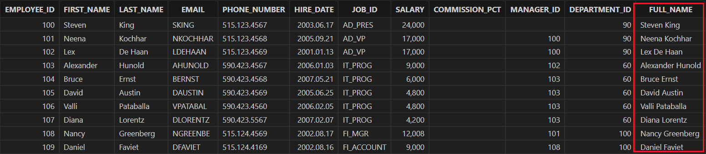employees = loadTable("dfs://hr", "employees") // 加载表 employees alter table employees add FULL_NAME STRING employees = loadTable("dfs://hr", `employees) // 增加列后需要重新加载表 update employees set FULL_NAME=FIRST_NAME + " " + LAST_NAME select * from employees重命名字段
将“FULL_NAME”列重命名为 "EMPLOYEE_NAME"。
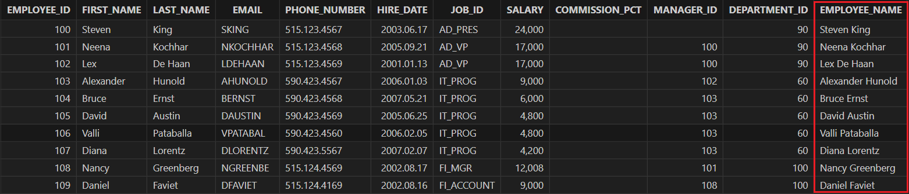alter table employees rename "FULL_NAME" to "EMPLOYEE_NAME" employees = loadTable("dfs://hr", `employees) // 重命名列后需要重新加载表 select * from employees删除字段
删除上文新增的 "EMPLOYEE_NAME" 字段。
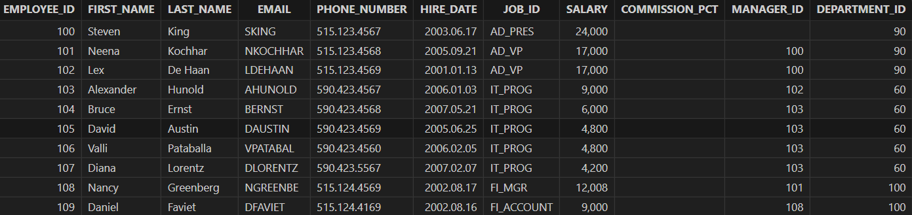alter table employees drop EMPLOYEE_NAME employees = loadTable("dfs://hr", `employees) // 删除列后需要重新加载表 select * from employees
2.4. 删除库表
删除数据库
drop database if exists "dfs://hr"删除数据表
drop table if exists "dfs://hr"."job_history"
3. SQL 关键字
注：下文的表变量均是通过 tbName=loadTable(“dfs://hr“, `tbName) 加载得到的，为了说明的简洁，该步骤已被省略。
3.1. 谓词
谓词指的是返回值为真值的函数，DolphinDB 支持谓词的关键字有：(not) in, (not) like, between, (not) exists, is (not) null。
(not) in
选取 "employees" 表中 "EMPLOYEE_ID" 为 [101, 103, 152] 的对应记录。
select * from employees where EMPLOYEE_ID in [101, 103, 152];选取 "employees" 表中 "EMPLOYEE_ID" 不在 100~150 的对应记录。
select * from employees where EMPLOYEE_ID not in 100..150;(not) like
选取 "employees" 表中 "PHONE_NUMBER" 以“515”开头的对应记录。
select * from employees where PHONE_NUMBER like "515%";选取 "employees" 表中 "JOB_ID" 不以“AD”开头的对应记录。
select * from employees where JOB_ID not like "AD%";between
统计 2006 年雇佣的职员人数。
select count(*) from employees where date(HIRE_DATE) between 2006.01.01 and 2006.12.31 // output: 24(not) exists
注：由于 exists 暂不支持在分布式查询中使用，下述脚本先将维度表和分布式表赋值给内存表再进行查询。
job_history = select * from loadTable("dfs://hr", "job_history") employees = select * from loadTable("dfs://hr", "employees")查询记录在 "job_history" 表中的 "employees" 表的职员对应的记录。
select * from employees where exists(select * from job_history where employees.EMPLOYEE_ID in job_history.EMPLOYEE_ID)查询记录不在 "job_history" 表中的 "employees" 表的职员对应的记录。
select * from employees where not exists(select * from job_history where employees.EMPLOYEE_ID in job_history.EMPLOYEE_ID)is (not) null
查询存在经理的部门对应的记录。
select * from departments where MANAGER_ID is not null查询任务百分比为空的职员对应的记录。
select * from employees where COMMISSION_PCT is null
3.2. distinct
distinct 关键字添加在 select / exec 语句后，用于去除重复值并返回唯一值（distinct value）。
注：支持在分布式查询中使用，但暂不支持 distinct 与 group by, context by 或 pivot by 配合使用。
需要注意 DolphinDB 中存在同名的函数 distinct，若在 SQL 中使用 distinct 函数，则不保证返回结果的顺序，且默认将结果列的列名重命名为 "distinct_colName"。
select distinct COUNTRY_ID from locations // (1)
select distinct(COUNTRY_ID) from locations // (2)在函数中应用 distinct：统计唯一值的数量。
select count(distinct JOB_ID) from employees // output: 19对多列应用 distinct：取 "DEPARTMENT_ID", "MANAGER_ID" 的唯一值。
select distinct DEPARTMENT_ID, MANAGER_ID from employees3.3. any / all
支持使用 any / all 进行谓词比较，谓词包括：=, !=, >, <, <=, >=.
any
查询和采购部门任意职工薪水相同的职工信息。
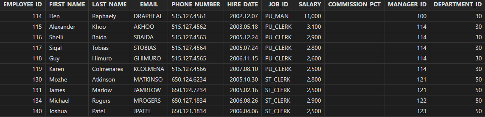select * from employees where salary = any(select salary from employees where department_id = 30) order by employee_idall
查询薪水大于等于 IT 部门的最低薪水的员工信息。
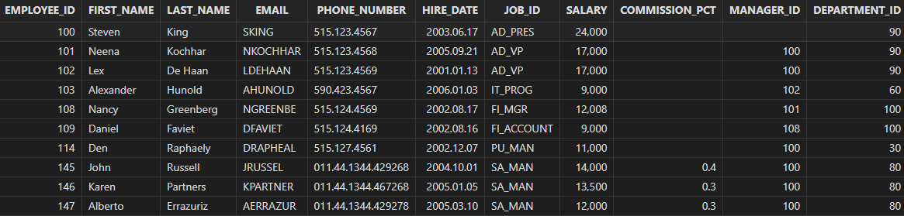select * from employees where salary >= all (select salary from employees where department_id=60) order by employee_id**注：**目前不支持形如
ALL (1400, 3000)这样的比较。
3.4. order by 支持 nulls first / last
支持在 order by 子句中，对空值字段进行 first/last 排序。
查询职工表并按经理 ID 排序，没有经理的职工优先。
select * from employees
order by manager_id asc nulls first查询职工表并按经理 ID 排序，没有经理的职工放至最后。
select * from employees
order by manager_id asc nulls last3.5. 支持 with 语句
with 子句可以极大地提高 SQL 的可读性，并且通过 with 生成可复用的中间表，提高一些复杂 SQL 的执行效率。
查询财务部门已经工作 5 年以上，薪水 8000 以上的职员列表，并按薪水从高到低排序。该查询先查询财务部门工作 5 年以上的职工，生成临时表 "employees_with_salary_increase"，并在 "employees_with_salary_increase" 的基础上继续查询薪水在 8000 以上的职工信息生成 "employees_with_raise"表，最终在 "employees_with_raise" 表上查询并得到最终结果。
//查询在部门ID为100的员工中，那些在过去五年内（由has_5_years字段表示）有工资增长（即当前工资大于8000）的员工信息。这些信息包括员工ID、工资和是否有五年工作经验。
with
employees_with_salary_increase as (
select employee_id, salary, year(now()) as current_year,
case when year(now()) - year(hire_date) > 5 then 1 else 0 end as has_5_years
from employees
where department_id = 100
),
employees_with_raise as (
select employee_id, salary, has_5_years
from employees_with_salary_increase
where salary > 8000
and has_5_years = 1
)
select employee_id, salary, has_5_years
from employees_with_raise
order by salary desc; //查询结果按工资降序排列如上，在后续的版本中，通过使用 with 语句，我们可以将复杂的查询过程分解成多个步骤，并且将这些步骤的结果进行临时存储。这可以大大简化查询过程，并且提高查询效率。
3.6. 集合运算
支持集合的并运算，包括 union、union all。
union all
将地区信息表与部门信息表合并查询，查询所有的地区 ID（可能存在重复记录）。
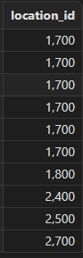select location_id from locations union all select location_id from departments order by location_idunion
将地区信息表与部门信息表合并查询，查询非重复的地区 ID。
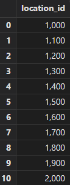select location_id from locations union select location_id from departments order by location_id
4. join 增强
join 在分析场景应用广泛，尤其是在数据仓库维度建模中，通过 join 来生成大宽表服务于应用层。在之前的版中，join 有诸多限制（比如不支持类型不匹配的字段，只支持分布式表之间关联等）。DolphinDB 2.00.10 版本大大提升了 join 的功能。在标准 SQL 中，join 的语法主要定义在 SQL92, SQL99 中，SQL99 的可读性更高，功能更加完备，被广泛采用。
SQL92 关联特性
| 分类 | 语法 | DolphinDB 支持情况 |
|---|---|---|
| 笛卡尔积 | from t1,t2 | √ |
| 等值连接 | from t1,t2 where t1.id= t2.id | √ |
| 非等值连接 | from t1,t2 where t1.id <op> t2.id 其中，op 包括：>, <,>=, <=, <>，between…and | √ |
| 外连接 | 左连接：from t1, t2 where t1.id = t2.id(+) 右连接：from t1, t2 where t1.id(+) = t2.id | X |
| 自连接 | from t t1, t t2 where t1.id <op> t2.id其中，op 包括：=,>, <,>=, <=, <>，between…and | √ |
SQL99 关联特性
| 分类 | 语法 | DolphinDB 支持情况 |
|---|---|---|
| 交叉连接（笛卡尔积） | t1 cross join t2 | √ |
| 等值连接 | t1 [inner] join t2 on t1.id = t2.id | √ |
| 非等值连接 | t1 join t2 on t1.id <op> t2.id 其中，op 包括：>, <,>=, <=, <> ,between…and | X |
| 外连接 | 左连接：t1 left join t2右连接：t1 right join t2 全连接：t1 full join t2 | √ |
| 自然连接 | t1 natural join t2 | X |
| using 连接 | t1 [inner] join t2 using(id) | X |
| 自连接 | t t1 join t t2 on t1.id <op> t2.id 其中，op 包括：=,>, <,>=, <=, <> ,between…and | √ |
4.1. 标准 SQL 的各种类型的关联、笛卡尔积
具体包括 cross join、inner join、left join、right join、full join。除标准 SQL 的关联之外，还拓展了 left semi join（左半连接）。
cross join（笛卡尔积）
获取职工的两两信息表，可以基于此结果集做一些关联分析。
SQL 92
select * from employees a, employees b where a.employee_id <> b.employee_idSQL99
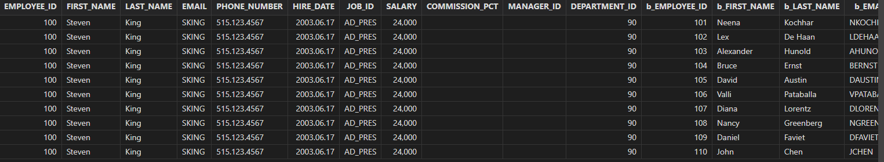select * from employees a cross join employees b where a.employee_id <> b.employee_id
inner join
职工表自关联，获取职工、经理 ID 信息。
SQL92
select e1.employee_id, e1.manager_id from employees e1, employees e2 where e1.manager_id = e2.employee_id order by e1.employee_id, e1.manager_id
SQL99
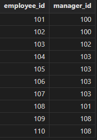select e1.employee_id, e1.manager_id from employees e1 inner join employees e2 on e1.manager_id = e2.employee_id order by e1.employee_id, e1.manager_id
left join
职工表自关联获取职工 ID，经理 ID，包括没有上级经理的职工。
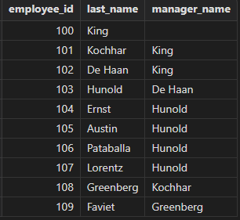select e1.employee_id, e1.last_name, e2.last_name as manager_name from employees e1 left join employees e2 on e1.manager_id = e2.employee_idleft semi join
left semi join 不属于标准 SQL 的范畴，但应用广泛，且在分布式环境有较好的性能，故予以支持。
获取部门信息，并展示一个薪水在 2500 以上的员工信息。
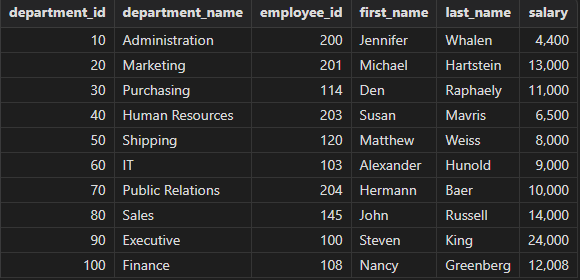select department_id, department_name,employee_id, first_name, last_name, salary from departments left semi join employees // or left semijoin on departments.department_id = employees.department_id and employees.salary > 2500 order by department_idright join
获取职工薪水、部门信息，包括那些没有所属部门的职工。
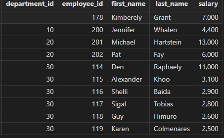select department_id, employee_id, first_name, last_name, salary from departments right join employees on departments.department_id = employees.department_id and employees.salary > 2500 order by department_idfull join
展示所有部门的职工信息，包括没有员工的部门和没有所属部门的员工。
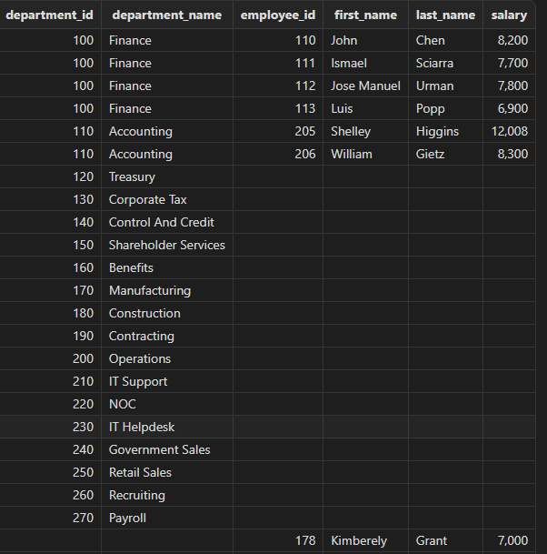select department_id, department_name, employee_id, first_name, last_name, salary from departments a full join employees b on a.department_id = b.department_id
4.2. 表类型拓展
参与 join 的表类型支持：内存表、分布式表、维度表、非相关子查询（单表、多表 join 的子查询）的临时表。
查找各职员的工作历史信息，测试各类型的表进行关联查询的兼容性情况。
select j.job_id, j.job_title, j.min_salary
, h.start_date, h.end_date
from jobs j
left join job_history h
on h.job_id = j.job_id | 类型 | 内存表 | 分布式表 | 维度表 | 子查询 |
|---|---|---|---|---|
| 内存表 | √ | √ | √ | √ |
| 分布式表 | √ | √ | √ | √ |
| 维度表 | √ | √ | √ | √ |
| 子查询 | √ | √ | √ | √ |
4.3. 多表级联 join
现在你可以将任意多个表 join（之前的版本只能支持两个分区表的 join），来拼接一些大宽表。
关联查询职工表、部门表，获取详细的职工信息，包括个人、经理、部门相关信息。
select a.employee_id, a.last_name, a.manager_id, b.last_name as manager_name
, a.department_id, c.department_name
from employees a
inner join employees b
on a.manager_id = b.employee_id
inner join departments c
on a.department_id = c.department_id 4.4. on 条件拓展
查询职工的工作历史，并将 FI_ACCOUNT，AC_ACCOUNT 都视为 AC_ACCOUNT（会计）。
select employee_id, j.job_id, j.job_title, j.min_salary
, h.start_date, h.end_date
from job_history h
left join jobs j
on j.job_id = case when h.job_id in ("FI_ACCOUNT", "AC_ACCOUNT") then "FI_ACCOUNT" else h.job_id end
order by employee_id支持在 join 的条件列上做如下转换：
- 函数
- case when
- 支持整型与 STRING/SYMBOL 类型字段 join
注：目前仍然不支持 on 1=2 这样的常量表达式（对开发、框架代码可能有一些影响）。
5. SQL 方言 (dialect) 兼容
Oracle、MySQL 等传统数据库在遵循 SQL 规范的前提下，都有各自的扩展特性，并且存在行为不一致的同名函数。以 substr/concat 函数为例：
- MySQL 执行
select substr('HelloWorld',0,4)会返回空值，Oracle 执行select substr('HelloWorld',0,4) from dual返回 "Hell"，两者输入一致，但是输出不一致。 - MySQL 中
concat可以拼接多个字符串，select concat('my', 's', 'ql', '8')，Oracle 中concat只能拼接两个字符串，两者函数名称一致，但是签名不一样。
为此，DolphinDB 开发了一整套框架，使得用户可以指定每个 session 选择兼容的 SQL 方言。目前已支持 Oracle 和 MySQL。其中在 Oracle 模式下，已经实现了一系列的 Oracle 函数，在 MySQL 模式下，实现的函数还较少。后续版本会继续开发，进一步提升兼容率。
5.1. 脚本使用 SQL 方言
方言模式可以在客户端工具 session 级别进行指定，设置后按指定的 SQL 方言进行解析执行。以 DolphinDB GUI 环境为例：
设置 File → Preferences → Always show sqlStd dropDown(√)
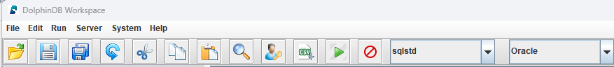选择对应的 SQL 方言即可，目前支持 Oracle、MySQL、DolphinDB 三种模式。
下面示例以 Oracle 模式按部门统计职工薪水情况，包括部门信息、职工人数等：
select
d.department_id,
d.department_name,
count(a.employee_id) as num_of_employee_id,
sum(a.salary) as total_salary,
avg(a.salary) as avg_salary,
max(a.salary) as max_salary,
decode(a.job_id, 'IT_PROG' , 'Programmer', 'FI_ACCOUNT', 'Accountant', 'Others') as job_title
from employees a
inner join departments d
on a.department_id = d.department_id
group by
d.department_id,
d.department_name,
decode(a.job_id, 'IT_PROG' , 'Programmer', 'FI_ACCOUNT', 'Accountant', 'Others') as job_title上述代码使用了 Oracle 的 decode 函数，除此之外，目前还支持： concat, sysdate, nvl, to_char, to_date, to_number, regexp_like, trunc, asciistr，instr，row_number。通过设置 SQL 方言，使用 Oracle 的应用程序迁移至 DolphinDB 时，SQL 代码迁移成本大大降低。MySQL 模式的使用方式类似，方言选项选择 MySQL 即可。目前 MySQL 只支持 sysdate() 函数，后续版本会逐步提高兼容性。
5.2. API 使用 SQL 方言
Java API
使用 Java API 时可以在构造 DBconnection 对象时输入 SqlstdEnum, 包括
DolphinDB，Oracle，MySQL。package com.dolphindb.sqlstd; import com.xxdb.DBConnection; import com.xxdb.comm.SqlStdEnum; import com.xxdb.data.Entity; import java.io.IOException; public class OracleMode { public static void main(String[] args) throws IOException { DBConnection connection = new DBConnection(SqlStdEnum.Oracle); connection.connect("192.168.1.206", 11702, "admin", "123456"); String sql = String.format( "select employee_id, first_name, last_name, \n" + " decode(job_id, 'IT_PROG' , 'Programmer', 'FI_ACCOUNT', 'Accountant', 'Others') as jobs_title\n" + "from loadTable(%s, %s) a" , "\"dfs://hr\"", "\"employees\"" ); Entity result = connection.run(sql); System.out.println(result.getString()); } }JDBC
使用 jdbc 时需要在 url 上增加配置项 sqlStd。
spring.datasource.url=jdbc:dolphindb://192.168.1.206:11702?databasePath=dfs://hr&sqlStd=Oracle spring.datasource.username=admin spring.datasource.password=123456 spring.datasource.driver-class-name=com.dolphindb.jdbc.Driver
6. 总结
DolphinDB 自 1.30.22 / 2.00.10 版本起，对标准 SQL 的常用语法和关键字实现了兼容，包括：
- 大小写兼容：SQL 关键字支持全大写或全小写，字段名大小写不敏感，但数据库名/表名还是大小写敏感；
- SQL 语句换行解析：支持在 SQL 语句中任意位置的换行；
- 支持谓词：支持的关键字有 (not) in, (not) like, (not ) between and, (not) exists, is (not) null
- distinct 支持多列：distinct 支持对多个字段一起去重，暂不支持与 group by, context by, pivot by 联用；
- order by 支持 nulls first/last
- 支持 with as 语句
- 支持 union、union all
- 支持 any、all
- 支持多表 join：支持的 join 包括 cross join, inner join, left join, right join, full join, left semi join（left semijoin 也支持） 。
- 支持用 comma (,) 来表示 cross join，a join b，如果后面没有跟 on 条件，表示 cross join，否则表示 inner join。
- on 条件列支持函数、case when（以前只能是表的某一个字段）。
- 支持整型与字符串类型的 join。
- 支持 join 对象是子查询：支持多分区表的 join（以前只能支持两分区表的 join），支持子查询。join 的表可以是内存表、分区表、维度表、单表子查询、多表 join 的子查询。暂不支持子查询使用父查询的字段；
另外针对 Oracle、MySQL 等传统数据库在遵循 SQL 规范的前提下，都有各自的扩展特性、特别是有同名函数但行为不一致的情况，DolphinDB 开发了一整套框架，使得用户可以为每个会话 (session) 选择兼容的 SQL 方言，目前在 Oracle 模式下，已经实现了一系列的 Oracle 函数。后续版本 DolphinDB 会继续进行 SQL 标准化的开发，进一步提升兼容率。例如对于在 SQL-2003 标准中引入的开窗函数，将会在下个主要版本（2.00.11）支持。